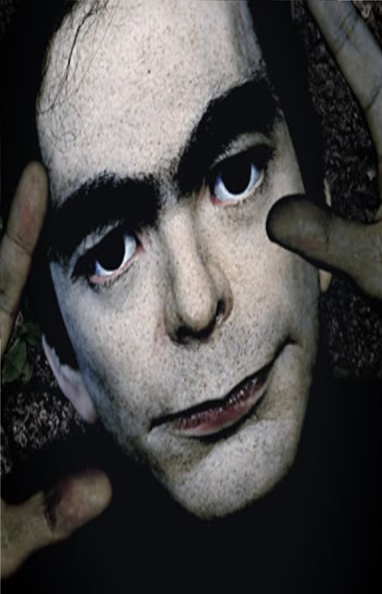

El hombre de los sueños
Todo comenzó a surgir cuando en el año 2006 en Nueva York, la paciente de un conocido psiquiatra, señaló la cara de un hombre, el cual se le había aparecido reiteradas veces en sueños. En más de una ocasión, ese hombre le había dado numerosos consejos sobre su vida privada, sin embargo, la paciente aseguró no haber conocido al hombre en toda su vida. Ese retrato permaneció olvidado en la mesa del psiquiatra, hasta que en otra ocasión, cuando llegó otro paciente, este reconoció la misma cara, asegurando que el hombre lo había visitado en sueños.
Igualmente afirmó que nunca lo había visto en la vida real. De ese modo, el psiquiatra decidió enviar la fotografía del retrato a algunos de sus colegas psiquiatras que trabajan con pacientes que solían tener sueños recurrentes. En apenas unos meses, cuatro de los pacientes reconocieron a dicho hombre como una presencia muy frecuente en sus propios sueños. Todo los pacientes se referían a él como “Este hombre”.
Desde enero del año 2006 hasta hoy, por lo menos 2.000 personas han afirmado haber visto a este hombre en sus sueños, en muchas ciudades de todo el mundo: Los Ángeles, Berlín, Sao Paulo, Teherán, Pekín, Roma, Barcelona, Estocolmo, París, Nueva Delhi, Moscú…etc. Por el momento no existe una relación comprobada o rasgo común entre las personas que han soñado con ver a este hombre. Por otro lado, ningún hombre ha logrado ser reconocido como semejante al hombre del retrato que las personas señalaban como visto en sus sueños.